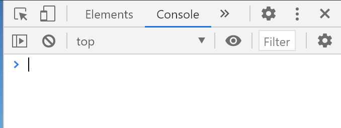
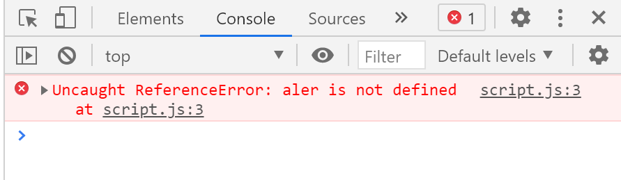
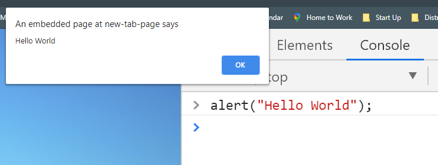
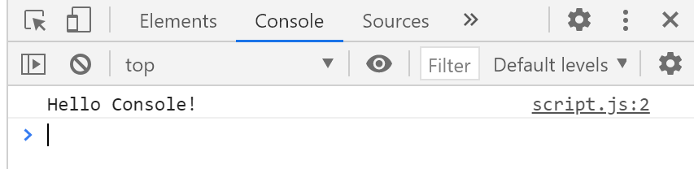

Developer Console
What is the Developer Console?
The developer console is a part of a web browser. The developer console is useful for:
- seeing errors
- running commands
- logging messages
Open the Developer Console
Most Developers lean towards Chrome or Firefox for development because those browsers have the best developer tools.
To open the developer tools in the Chrome browser:
- press
F12 - or right click and select
Inspect
Make sure to select the Console tab.

Seeing Errors
When we make errors in our code, certain types of errors may have information about the error displayed in the developer console. This is very useful when trying to fix the errors.
script.js
// Test errors
aler("Hello World");
In the code above, I misspelled the name of the alert() function. The error below
informs me that I have a reference error on line 3 of script.js. There is no JavaScript command called "aler" and
now I know what my mistake was and where in my code I made the mistake.

Running Commands
It is possible to run JavaScript commands in the console. This is sometimes useful when testing out different features of the JavaScript language.
To run a command in the console, simply type a command after the > sign and press
Enter.
Example

Logging to the Console
When testing code, it is sometimes useful to log information to the console.
To log to the console, use the console.log() method.
script.js
console.log("Hello Console!");

Summary
- Open the console by pressing
F12or right click andInspect. - The console is useful for getting information about programming errors.
- The console may be used to run JavaScript commands.
console.log()is a JavaScript command that will log a message to the console.